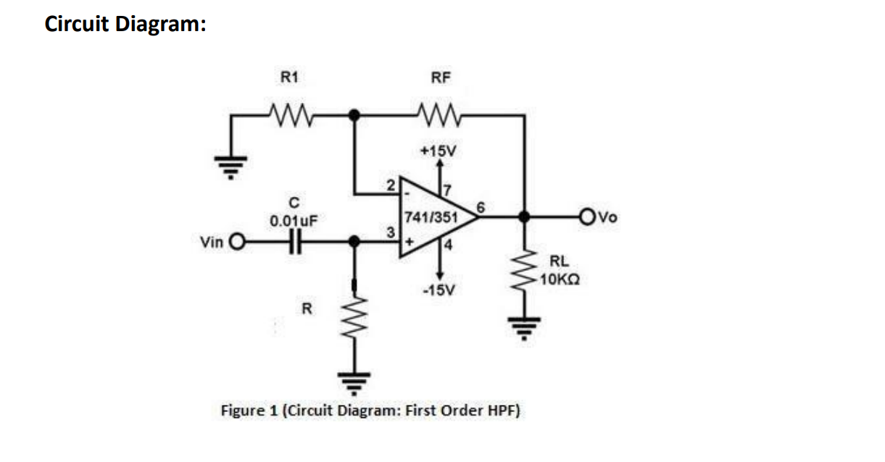
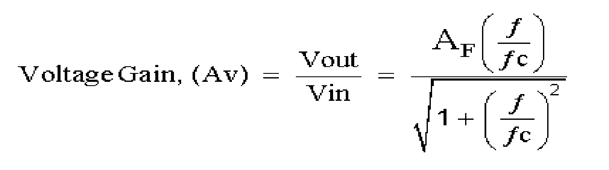
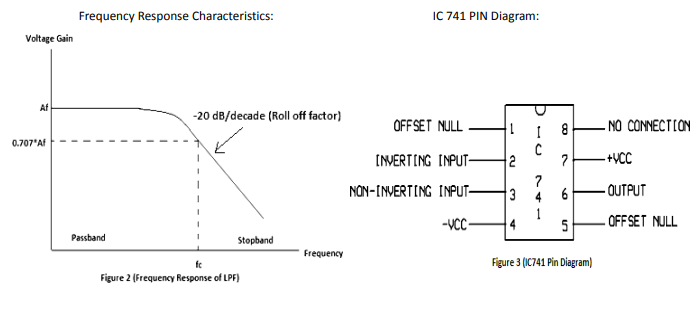

Desiging of a first order low-pass filter using op-amp (IC 741) .


Where
AF = the pass band gain of the filter, AF = (1 + RF / R1)
ƒ = the frequency of the input signal in Hertz, (Hz)
ƒc = the cut-off frequency in Hertz, (Hz)
